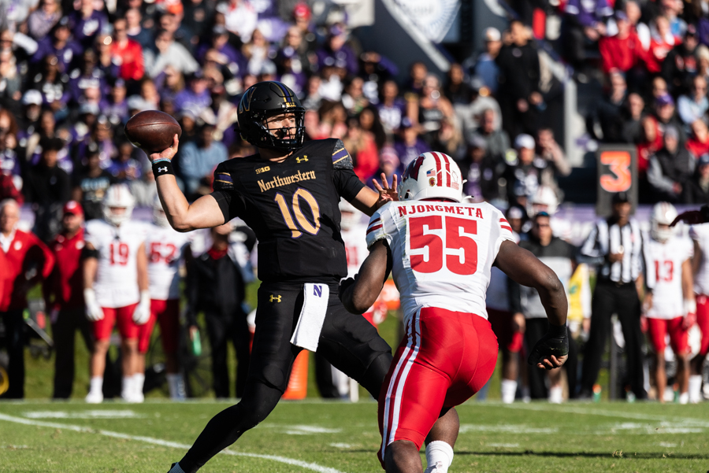
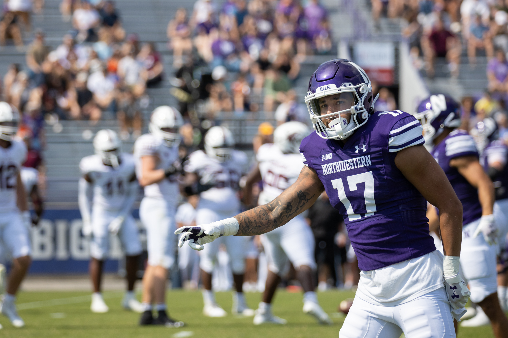
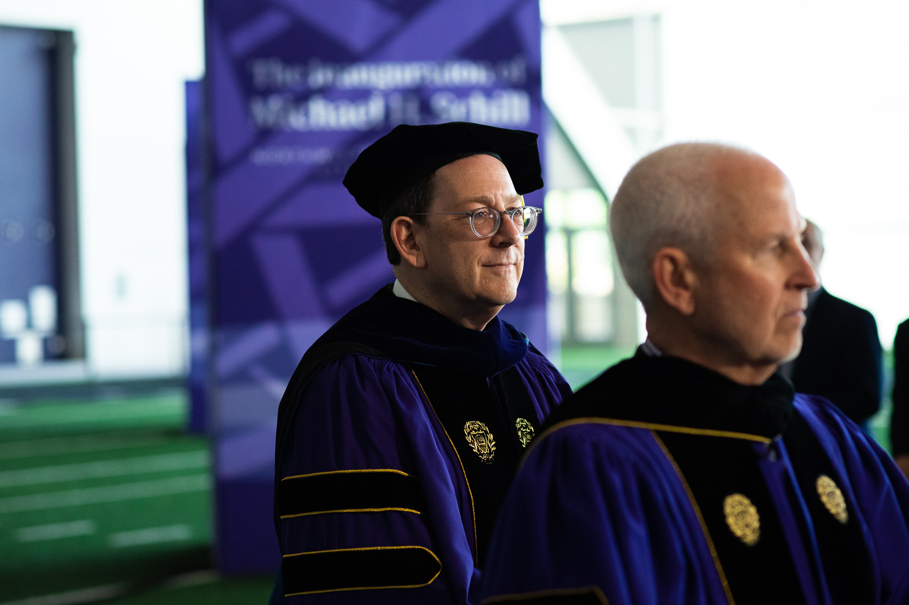

The Daily Northwestern's

The Daily Northwestern's
2023 Football season PREVIEW

01
THE LINEUP

Quarterbacks
Bryant beats out Sullivan for starting role, named Game 1 starter
With time winding down till Northwestern takes the field in Piscataway, the Wildcats have finally named their Game 1 starter.
It’s Cincinnati sixth-year transfer Ben Bryant, according to College Football Senior Writer Pete Thamel Sunday morning.
Junior Brendan Sullivan and Bryant had been “duking it out” for the starting quarterback role, according to interim head coach David Braun. He added that it was “not an easy decision” at a press conference last month.
A seasoned starter, Bryant enters Evanston after working under center for 11 games last season before injuring his right foot. The La Grange native held a 61% pass completion rate alongside 21 touchdowns and 7 interceptions at Cincinnati.
Sullivan remains the team’s most recent starting quarterback, taking over after then-senior Ryan Hilinski suffered an injury while playing Wisconsin. The junior completed 74% of passes for four touchdowns and three interceptions.
The two measure up in stature, both 6’3” and around 220 pounds, but differ in stats. Starting 11 games versus Sullivan’s four last season, Bryant threw for 2,732 yards compared to 589 for Sullivan. The Bearcats won nine games with Bryant at the helm while the Cats’ losing streak continued under Sullivan.
Behind Bryant or Sullivan stands a quarterback room solidified by a now-healed Hilinski and sophomore Jack Lausch, who debuted for a brief stint against Illinois last season.
Hilinski was announced as the starting quarterback just hours before last season’s opener against Nebraska.
Elena Hubert

Running Backs
Cam Porter leads running back room, eyes return to 2020 form
With bell cow running back Evan Hull and his 276 touches from the 2022 season gone to greener pastures in the Indianapolis Colts’ backfield, a familiar face rises to fruition as Northwestern’s leader in the running back room.
Three years removed from a team-high 333 yards and five touchdown rushing output in his seven-game true freshman slate, senior Cam Porter will tote the rock atop the Wildcats’ depth chart at halfback this season.
When healthy, Porter has proven to be one of the team’s preeminent playmakers, and the Ohio native will look to make his presence known early in the run-heavy Mike Bajakian offense.
Junior Anthony Tyus III also displayed dynamic pass catching ability in last year’s season opening win against Nebraska, hauling in a 34-yard reception, but Hull’s 55 catches made for the lion share of NU’s backfield targets from Dublin to curtain call at Ryan Field. Expect an elevated receiving role for Tyus.
Sophomore Joseph Himon II was featured in spurts during his first-year, averaging an eye-opening 7.8 yards per carry — on four carries, though. The 2021 Arkansas Gatorade Player of the Year can certainly make his case for more snaps, especially in a scat back role.
As Porter and company go, the team will likely follow, meaning running back play will be crucial to any success for the Cats in 2023.
Jake Epstein
Wide Receivers
After significant turnover, Northwestern’s wide receiver room hopes for an impactful 2023 season
The Cats lost much of their receiving production from last season. Leading receiver Malik Washington transferred to Virginia, Donny Navarro II ran out collegiate eligibility and running back Evan Hull left for the 2023 NFL Draft. In fact, NU retained only two receivers that have started for the Cats at some point: senior Bryce Kirtz and junior Jacob Gill,who recorded 212 and 99 receiving yards respectively.
After finishing tenth in the Big Ten in receiving yards, NU will need these returners to step up in 2023.
Nevertheless, the Cats received a few impactful additions to its wideout room through the transfer portal, headlined by seniors Cam Johnson and A.J. Henning, from Arizona State and Michigan, respectively.
The changes to the group could open the door for receivers who weren’t starters last year. Seniors Preston Bacon and Raymond Niro III have new and increased opportunities, considering their four-plus years in Evanston already. With new wide receiver coach Armon Binns, contributions from its newcomers and heightened production from its returnees, NU’s receiving core can improve the team’s offensive performance in 2023.
Aayushya Agarwal


Tight Ends
Trio of veteran tight ends Lang, Gordon and Mangieri return
The more things seem to change, the more they stay the same, oddly enough.
Regardless of who lines up under center for Northwestern on Sunday, they’ll have a pack of pass catching veterans returning to the tight end slot.
The Wildcats return a bevy of experience and depth at tight end, headlined by senior Marshall Lang, redshirt senior Thomas Gordon and graduate student Charlie Mangieri.
Lang tallied 15 catches for 192 yards last year, following a breakout sophomore campaign in 2021 when he found the end zone for three scores. With improved quarterback play, Lang could see his numbers improve across the board.
Gordon’s one-handed grab against Duke was one of NU’s top offensive plays of the 2022 season, and the Texas native amassed nearly half of his 162 yards in a five-catch, 78-yard output against the Blue Devils last September. However, injuries throughout the season stopped Gordon from seeing consistent field time and success.
While Mangieri’s 2022 season ended prematurely with an injury against Southern Illinois, the sixth-year tight end is entering his last taste of collegiate action as one of the Cats’ five captains. As one of the most experienced players on the squad, others will lean on Mangieri heavily as a proverbial coach on the field.
Redshirt senior Duke Olges, a converted defensive end, and several other options may push for playing time this year in one of NU’s top position groups.
Jake Epstein

Offensive Line
O-Line searches for direction following starters’ departures
Northwestern offensive line coach Kurt Anderson hasn’t had to worry about the left tackle position since 2023 NFL first round draft pick Peter Skoronski stepped on campus in 2020. It could be argued his worries have been far-removed since 2019, as 2021 first rounder Rashawn Slater moved to left tackle in 2019.
This season, though, Anderson will be without the unanimous All-American and lacking several other multi-year starters, including Ethan Wiederkehr and Charlie Schmidt,and 2022 starter Vincent Picozzi. The group also lost early-enrollee freshman Dylan Senda in July, who transferred to Auburn.
Ouch.
The most experienced lineman now is senior Josh Priebe, who is returning from an ACL injury last October. He plans to move from guard to tackle this season. Junior Caleb Tiernan and senior Ben Wrather also started many games throughout the 2022 season, while senior Dom D’Antonio and junior Jackson Carsello saw much more limited playing time.
With so many starters departing after last season and many questions on what the starting five will look like, there’s much uncertainty and a lot for this bunch to prove.
Lawrence Price

Linebackers
Linebackers Gallagher and Mueller lead NU’s most-experienced unit in hopes of a bright season
Unlike Northwestern’s defensive line with little roster turnover from last year, the Wildcats’s second-level of defense is arguably the team’s most experienced group.
After the Irish Law Firm’s final member Chris Bergin closed up shop following the 2021 season to pursue professional opportunities, a new regime, led by now-seniors Bryce Gallager and Xander Mueller, took over. The two started 2021 as mainly backups, but showed off their talent as the season continued — Gallagher earning a starting role into the season and Mueller becoming a staple on special teams leading reps at linebacker.
Gallagher and Mueller’s time to shine came in 2022 as starters, and numbers wise, the two carried their weight. Gallagher, who was named a captain for the second-straight year on Wednesday,finished with the most tackles on the team with 100, whereas Mueller secured the second-most with 87.Only three other players in the Big Ten picked up more tackles than Gallager last season.
Of course, an asterisk must be put next to their impact considering NU’s 1-11 record, but another season means more experience, stronger skill sets, better reads and possibly less mistakes, such as missed tackles. Either expect senior Greyson Metz, who secured the sixth-most tackles for the Cats last year, or junior Mac Uihlein to fill out the last starting spot for the group.
NU did run a two-linebacker, five secondary look at times last year, which could eliminate the need for a Metz, Uihlein or another third linebacker, but the jury is still out.
Lawrence Price


Secondary
Azema’s return, offseason departures leave starting opportunities and potential for sky room
With multi-year starters Cameron Mitchell and AJ Hampton Jr.’s departure for the NFL Draft and Tulane, respectively, and 2022 starter Jeremiah Lewis transferring back to Duke in early August, most would think the Cats' sky room is bound for trouble.
That might not be the case.
The group gets back 2021 standout senior Coco Azema, who only played three games last season due to injury. Additionally, seniors Jaheem Joseph and Garnett Hollis Jr. stepped up during the season due to the secondary’s injuries, but went down with their own as well. Although much less experienced than Azema, they too have a chance to make an impact.
And this is all without 2022 starter senior Rod Heard II, who finished with the fourth-most tackles on the team last year, or sophomore Devin Turner and junior Theran Johnson — two young players that gained reps due to the secondary’s injuries.
Without Mitchell and Hampton out wide and Lewis lurking in the secondary, it will be interesting to see how players that showed promise in 2022 look in larger roles.
Lawrence Price

Special Teams
Addition of Michigan transfer A.J. Henning bolsters special teams unit
There’s no question about it, the star of the show is A.J. Henning, a preseason first team All-Big Ten punt returner this season and a two-time all-conference return man at Michigan.
The Frankfort, Illinois native totaled 475 punt return yards, 420 kick return yards and a pair of touchdown returns during his past two years in Ann Arbor. Opposing teams should be wary of kicking the ball in the direction of No. 8.
At punter, the Cats return a pair of seniors in Luke Akers and Hunter Renner. Akers, who attempted 45 of NU’s 58 punts in 2022, posted an average of 41.02 yards per punt — over four yards better than Renner’s average — and recorded seven punts of 50+ yards. Still, expect both to feature for the Cats again this season.
Adam Stage is no longer donning the purple and white, paving the way for senior Jack Olsen to take over kicking responsibilities. Olsen attempted just one field goal last season — which he missed — but he has “made over 90% of his field goals in practice” over the past two fall camps, according to NU Football team reporter Lauren Withrow.
The final returning specialist is senior Will Halkyard, who was NU’s lead long snapper for all 12 games last season.
Alex Cervantes
SUMMER 2023
02




{kind=link}
-
3-9, 1-8 Big Ten
I can’t imagine anyone more excited for the upcoming season than the actual Northwestern Football Team. They get the chance to put unquestionably the craziest off-season in program history to rest, and focus on the games ahead.
But, record-wise, I don’t expect it will be much different than last season.
With so much turnover, roster and coach wise, from last season and questions at nearly every position, it’s difficult to envision a large change from 2022 considering their schedule includes nine teams they played last year — each were losses.
The biggest perk entering this season for the Cats will be a high chance of winning its homecoming matchup against Howard.
Lawrence Price -
4-8, 2-7 Big Ten
I think the Cats will finish the season 4-8. Maybe that’s a little optimistic given the whirlwind of the last two months, but this team doesn’t have to do much to eclipse last season’s record. NU should protect home turf against UTEP and Howard, and I don’t think it’s farfetched to see Braun and his team win a game or two in the always chaotic Big Ten West.
Alex Cervantes -
3-9, 1-8 Big Ten
Northwestern football turned heads in the off season, but not for the right reasons. With the arrival of a new interim head coach in David Braun, departures of key starters and several ongoing federal lawsuits, the upcoming season is the definition of another rebuilding year.
The Wildcats packed conference schedule will put them to the test, but their three non-conference opponents should offer them some reprieve.
Skye Swann -
3-9, 1-8 Big Ten
In the wake of as tumultuous an offseason as one program could endure, Northwestern will kick off its 2023 campaign in a Sunday showdown of Big Ten basement dwellers at Rutgers.
With an interim head coach thrust into a grueling conference slate featuring the likes of Penn State and Wisconsin, the Wildcats will likely struggle to generate much momentum throughout the season.
It’s difficult to consider NU a favorite in any Big Ten battle, but a team becomes dangerous with little to lose. UTEP and Howard provide the program’s peak potential for victories, and coach David Braun’s bunch may just eke out an upset down the stretch.
Jake Epstein -
4-8, 2-7 Big Ten
Following a 1-11 2022 record and a tumultuous offseason, there’s no doubt that Northwestern will improve on the field in 2023.
After losing all of its non-conference games last season, expect the Cats to take care of business in their home matchups against UTEP and Howard this year. NU will also have opportunities to win both its season opener and season finale against Rutgers and Illinois.
I think the Cats will win one of those games, in addition to their home finale versus Purdue in November. NU will undoubtedly be sizable underdogs for many of its matchups, making a final record of 4-8 very much plausible.
Aayushya Agarwal -
2-10, 0-9 Big Ten
I’m hopeful Northwestern will see another win this season, but that’s about it. Interim head coach David Braun has made it clear the Cats have their eyes on the prize this after a tumultuous summer, but that “prize” looks more like one-upping last year’s record by a win or two rather than anything near bowl contention.
In a rebuilding season, my best bet is a concerted effort toward solidifying their internal culture — more that can be done during the couple of weeks of Fall Camp — over guaranteeing a winning program. Wins over UTEP and Howard shouldn’t come as a surprise, but neither should be a failure for an embattled program to compete with the Big Ten.
Elena Hubert
OUR PREDICTIONS
03-
CATS NAMED TO SENIOR BOWL WATCHLIST 4
-
INCOMING TRANSFERS 6
-
TACKLES BY LINEBACKER BRYCE GALLAGHER LAST SEASON 100
-
FCS NATIONAL TITLES WON BY INTERIM HC DAVID BRAUN 2
-
COMBINED CAREER STARTS AT THE QB POSITION 50